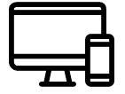
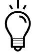
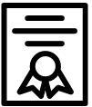

第 1 - 4 個月
程式基礎教學
- 業界實戰講師
- 企業主管/創業家/CTO 演講
第 5 - 6 個月
專案及作品導向實作
- 不只是 Demo - 真實可運作成
果 - 團隊開發 - 真實軟體開發團隊
的運作及分工 (Agile敏捷,
kanban 看板, CI 自動化建置)
第 6 - 7 月
作品發表
- 簡報 Demo 及溝通技巧
- 作品及程式碼講解
- 個人履歷準備 –
GitHub, CodePen …
未來及展望

就業及企業導師諮詢
- 就業媒合或未來職涯諮詢
- 企業導師 -人際連結及資源